Authors: Tobias Friese, Jack Skaarup Munn, Mads Hjerrild Hansen & August Louis Kuhn Jeppesen
Institute: Aalborg University Copenhagen: Department of Computer Science: Software development
Below here are the sounds produced from models with very minimal training, these sounds are deemed "not good enough" to be considered Timbre Transfer by the authors
|
CycleGAN #1: The Scream Headphone users, beware of LOUD sounds! |
CycleGAN #2: Alien communication signal |
|
|
VAE #1: The Hedge Trimmer |
VAE #2: The aliens are coming, yikes |
|
|
VAE #3: The aliens are coming, part 2 |
VAE #4: Static |
|
|
OG: |
Griffin-Lim: |
ISTFT: |
| Hamming distance threshhold for matches made in the ORB evaluation | |||
|
ISTFT vs Griffin-Lim, we see matches are made between 40 and 80 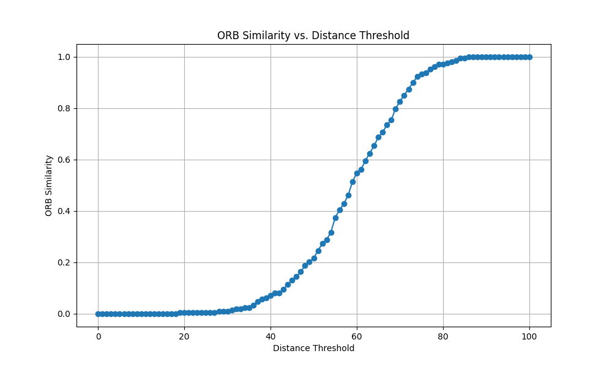 |
Original vs Griffin-Lim, we see matches are made between 5 and 60 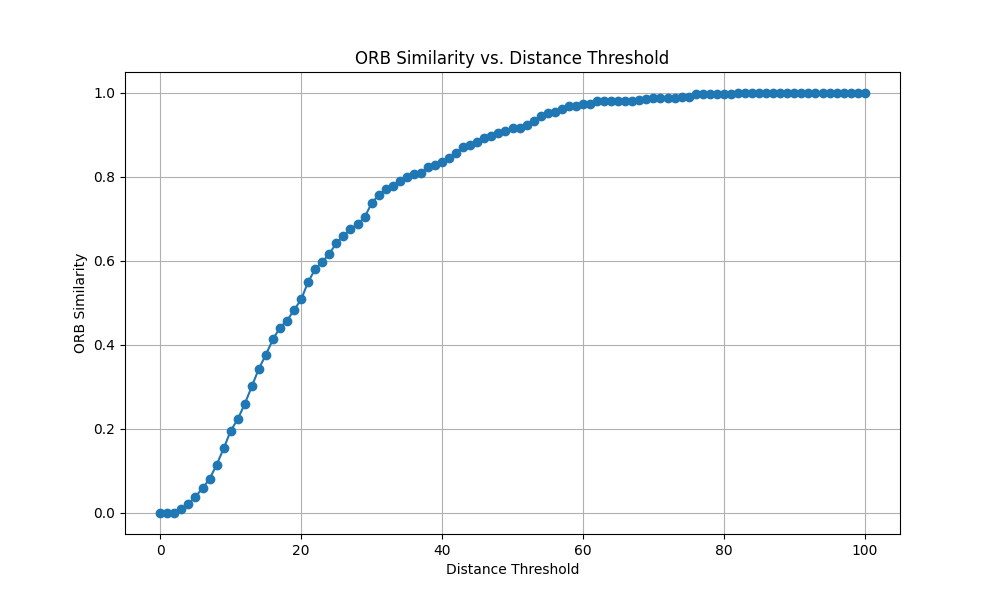 |
Original vs ISTFT, we see matches are made between 40 and 80 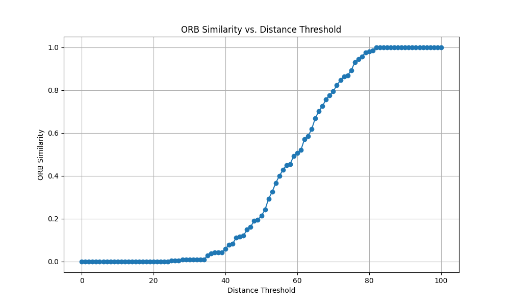 |
Original vs original, we see matches are made instantaneously at 1 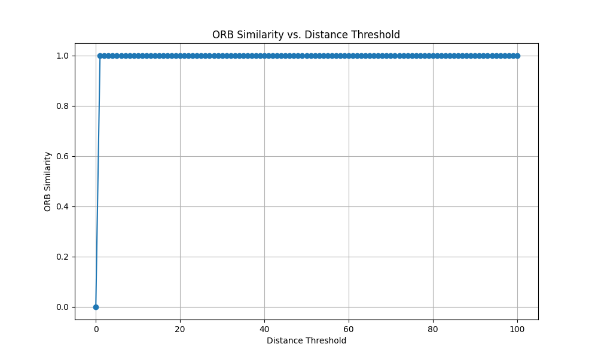 |
| Keypoint matching distribution of Hamming distance in ORB evaluation | |||
|
ISTFT vs Griffin-Lim 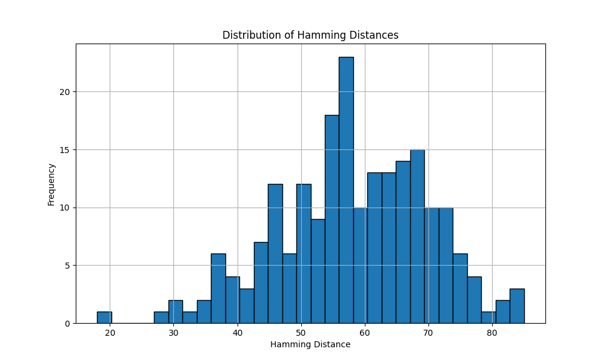 |
Original vs Griffin-Lim, notice the early matching 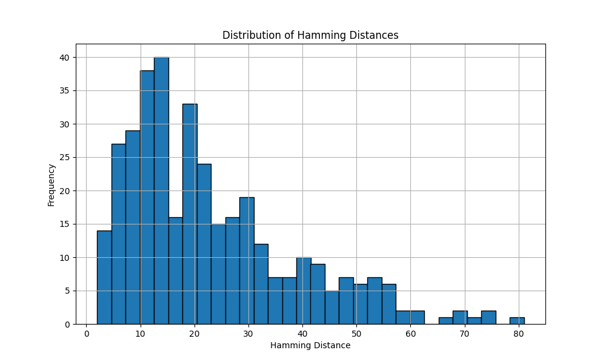 |
Original vs ISTFT 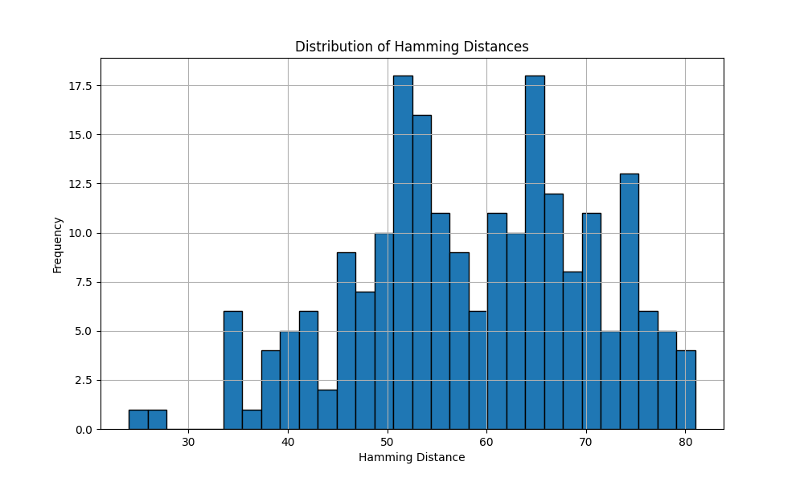 |
Original vs original, notice instant matching 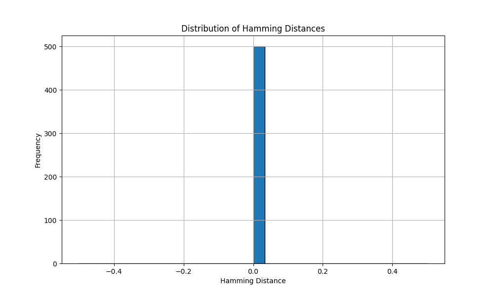 |
| Keypoint matching in ORB evaluation | |||
|
ISTFT vs Griffin-Lim 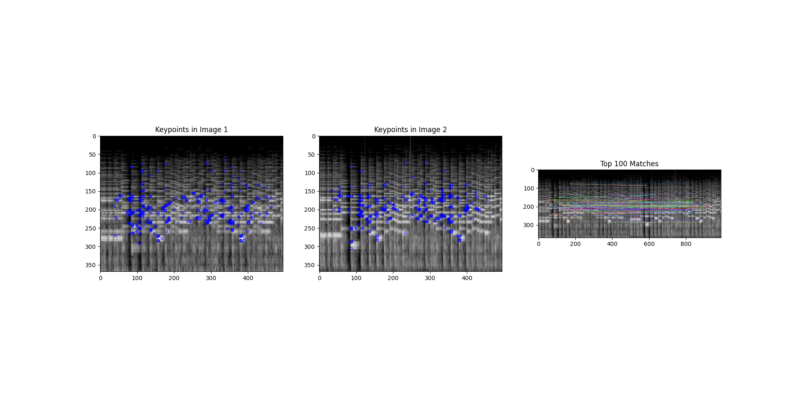 |
Original vs Griffin-Lim |
Original vs ISTFT 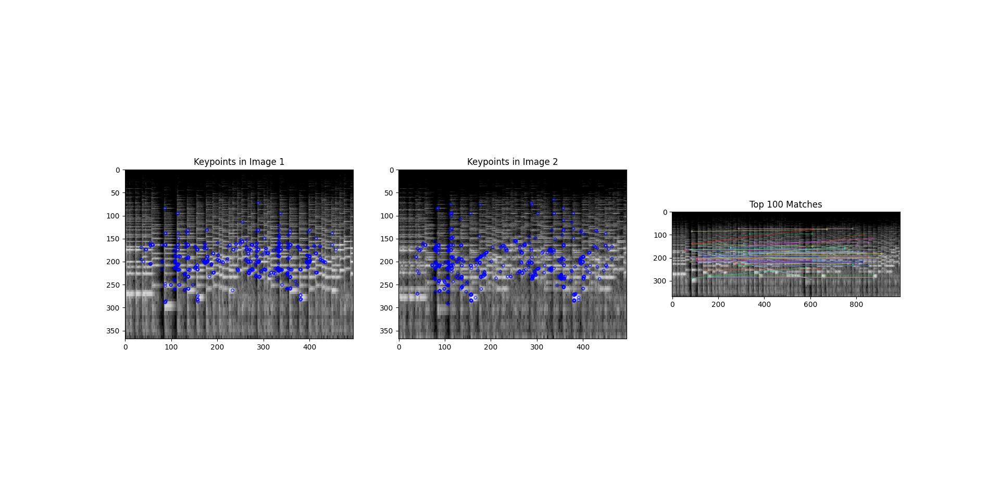 |
Original vs original 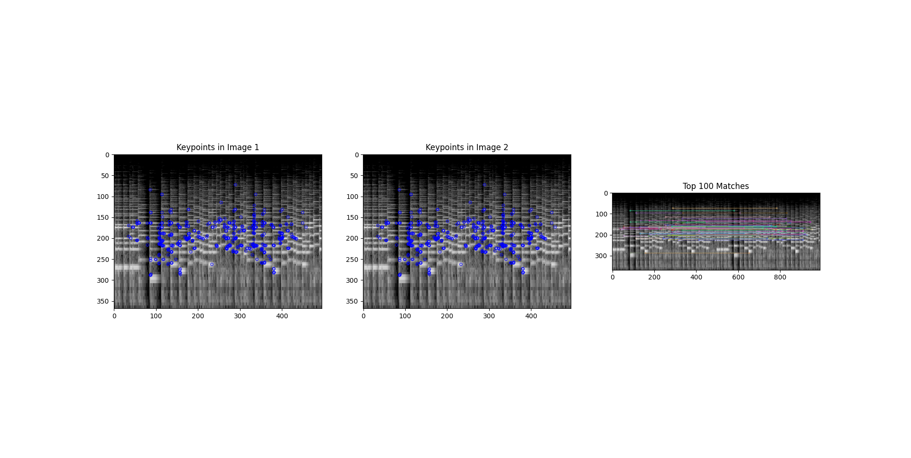 |